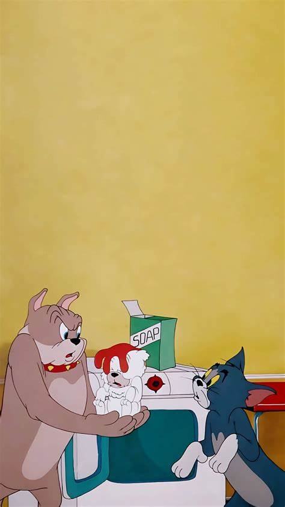
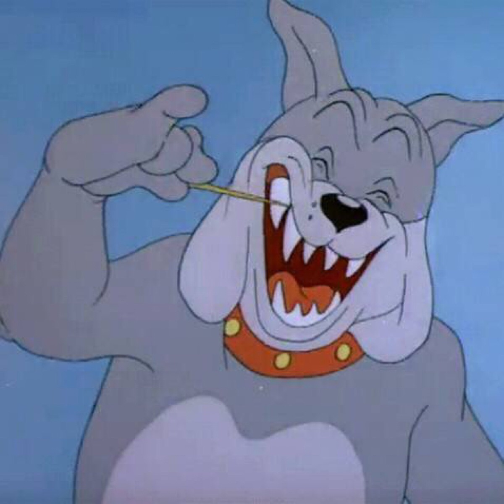
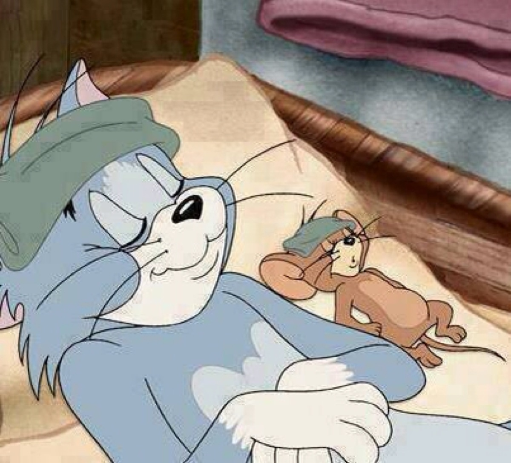
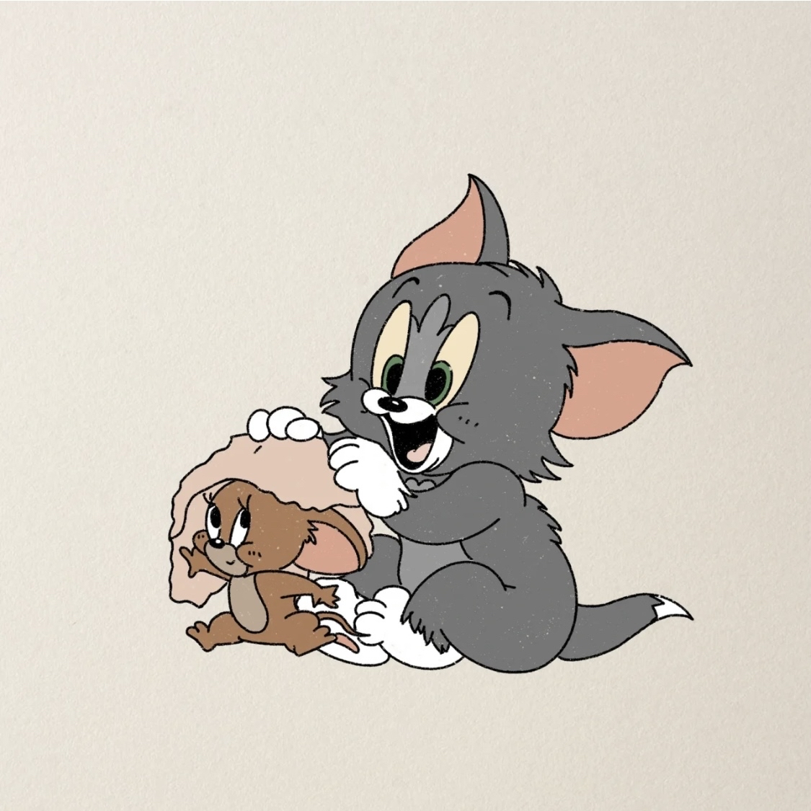
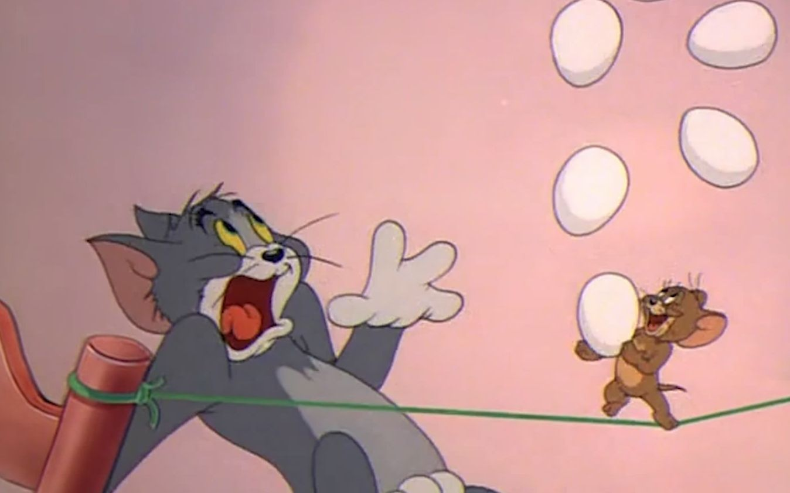
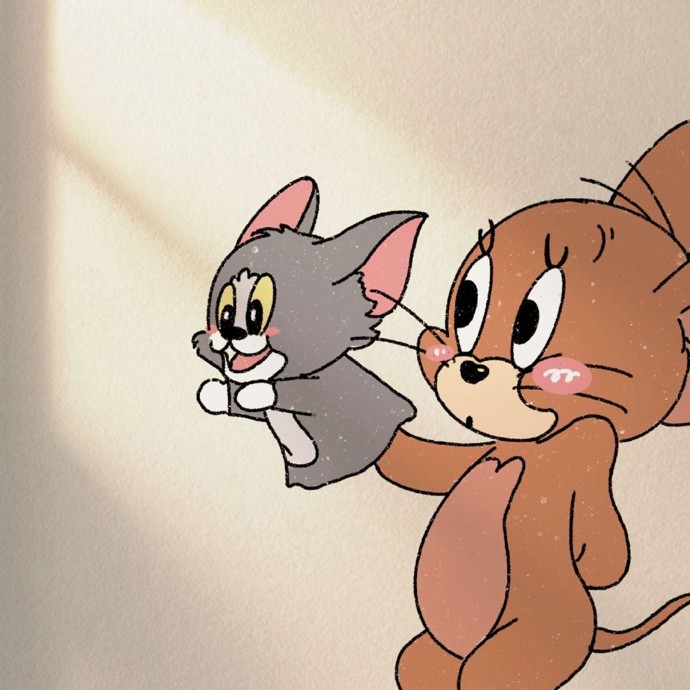
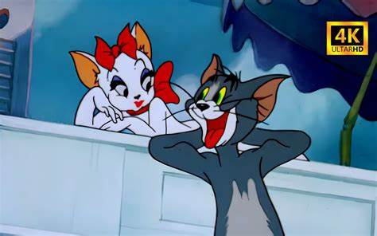
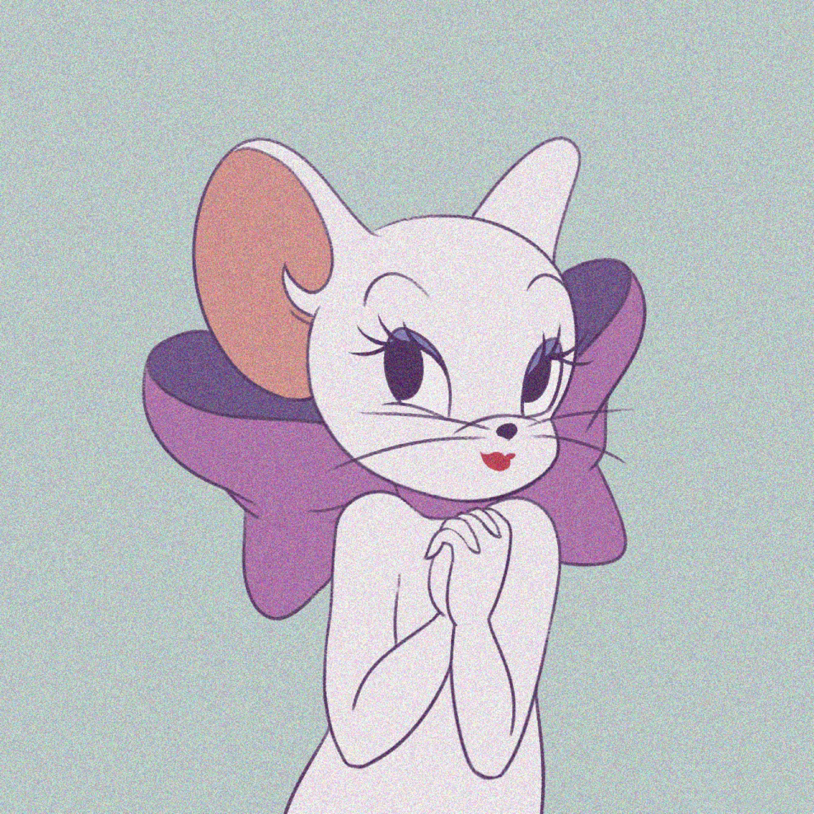

Tom and Jerry
Spike
一只凶猛的斗牛犬，汤姆总是招惹他（不管是有意拿他寻开心还是捉杰瑞时不小心的或者杰瑞栽赃嫁祸），因此总是暴打汤姆。
不过有时三人之间也会和谐相处。他生有一个可爱的儿子名叫泰克（Tyke），他很爱自己的儿子。杰瑞多次帮助斯派克，最典型的在《保镖》
[2]《有恩必报》《狗屋》中，因此斯派克和杰瑞关系很好。所以杰瑞经常利用斯派克保护自己免遭汤姆的追捕，但有时也会与杰瑞敌对
（第五集《狗惹麻烦》）并被杰瑞和汤姆联手对付。


Tom and Jerry
Tom
汤姆，本剧一号主角，70年代老动画中的卡通明星他与小老鼠杰瑞（Jerry）之间可称的上是一对欢喜冤家，二者亦敌亦友，有时互相捣乱，
有时互相帮助，有时争论不休，有时团结和谐。他每天忙碌于捉住同住在一起的杰瑞，但总是不如意，总在被耍，憨傻的可爱。生活中充满幽默搞笑，
同时也具有抒情与伤情的一幕；主人通常都为两只鞋太太。另外，他也爱慕漂亮的千金母猫图多盖洛（新版为图茨）。
有时还被其他成员欺负，如斯派克（Spike）、布奇、莱特宁、托普斯等。是个喜剧而又活在悲剧的角色。


Tom and Jerry
Jerry
杰瑞，在70年代老动画中的卡通明星，是一只古灵精怪的棕毛花枝鼠，为猫咪汤姆亦敌亦友的好伙伴，表哥是马索尔（大表哥）、
梅林（二表哥），侄子是小灰鼠泰菲，舅舅是佩克斯（拔汤姆胡子做琴弦的老牛仔灰鼠）。由于杰瑞古灵精怪的特征，经常能够成功戏弄猫咪汤姆（Tom）
来演出很多搞笑镜头逗观众笑。经常搞得汤姆不知所措，糗事百出（不过有时自己也会受伤），看似一对很强硬的敌人，但事实上，
他们这一对活宝在不知不觉时已经是好朋友了，谁也离不开谁，甚至有时汤姆认为杰瑞受了重伤、垂死或死亡了，他会惊慌失措，


Tom and Jerry
Galore
图多盖洛，一位富豪千金的母猫疑似母鼠，没有猫的特征，外表明艳动人，有惊人的美貌，经常在公园里看杂志，
每次出现都必然引起布奇和汤姆的争斗，甚至有时斯派克也为她神魂颠倒。

